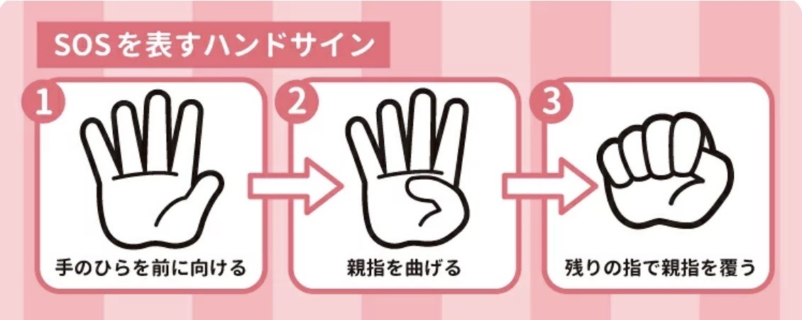
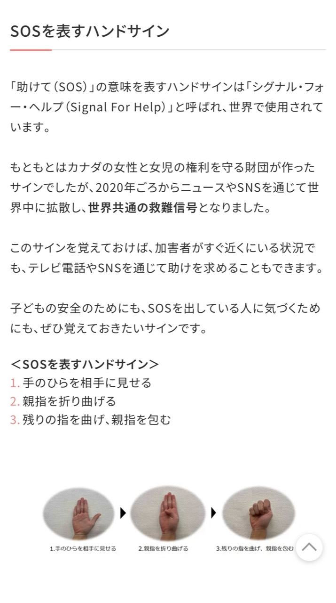

皆さんは、新しく始まった水谷豊さんと伊藤蘭さんの娘・趣里さん主演の「大空港~GATE24~」をご覧になられましたか？
その中で、「助けて（SOS）」の意味を表す世界共通のハンドサイン「Signal For Help」が出てきました。
このハンドサインは、次の3つの動作で表します。
- 手のひらを相手に向ける
- 親指を内側に折る
- 残りの4本の指で親指を包むように握る
この手の形を数字で表すと、
5 → 4 → 0
となります。
実は、この「5・4・0」が、当店 Repair540 の店名の由来です。
Repair（修理）という言葉に、「困っている人を助けたい」という想いを込め、このSOSのハンドサインから「540」という数字を付けました。
スマートフォンが壊れて困っている方、不安な気持ちでご来店される方が少しでも安心できるように。
「今、何に困っているのか」
「どうすれば一番安心していただけるのか」
「どうすれば喜んでいただけるのか」
そんなことをいつも考えながら、お客様一人ひとりに対応したいという気持ちを、この店名に込めています。
スマホの修理だけでなく、「困ったときに思い出していただけるお店」であり続けられるよう、これからも努めてまいります。

画像参照元：楽天ママ割「Mama’s Life」
SOSを表すハンドサイン（Signal For Help）の解説ページ